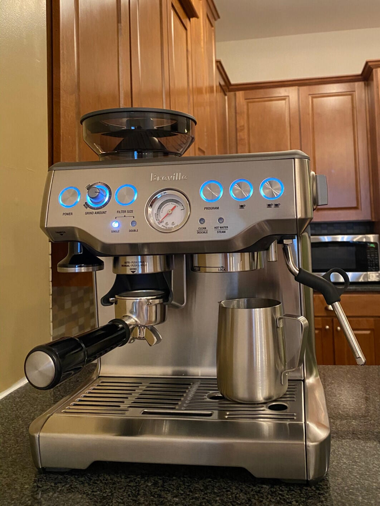

Breville BES870 半自动咖啡机

铂富经典家用半自动咖啡机，内置锥形磨豆器与 54mm 冲煮头，配备压力表与 PID 控温，从磨豆到萃取一条龙完成。约 2L 活水箱与手动蒸汽棒兼顾日常口粮与拉花练习，是许多家庭咖啡爱好者的第一台进阶机。
客观评测
BES870 内置锥形不锈钢磨豆器与 54mm 冲煮头，泵压约 15 bar、萃取约 9 bar，前置压力表可实时观察萃取状态。实测在研磨度与压粉配合得当时，浓缩油脂厚实、甜感明显，风味上限明显高于全自动机型。蒸汽棒蒸汽干燥度不错，可打出适合拉花的细腻奶泡。约 2L 水箱满足日常家庭使用，连续出杯时加热块温度略有波动，是家用半自动的常见取舍。
主观点评
它是那种会让人慢慢入坑的机器：从称豆、磨粉、压粉到看着压力表指针爬升，每个环节都有参与感。出品好时的成就感，是全自动咖啡机给不了的；当然失手时也得自己复盘。机身不锈钢质感扎实，摆在台面上像个小小咖啡吧。对想认真玩咖啡又不想一上来买分体机的人来说，它几乎是绕不开的经典选择。
优点与不足
- 磨豆冲煮一体，从豆到杯的完整仪式感
- 压力表直观显示萃取状态，便于调整研磨与压粉
- 蒸汽棒力度充足，练习拉花的进阶好搭档
- 需要自己压粉定压，新手上手有一定学习成本
- 加热块机型连续出杯后温度略有波动
参数规格
| 类型 | 半自动意式咖啡机（内置研磨） |
|---|---|
| 泵压 | 约 15 bar 意大利泵（萃取约 9 bar） |
| 水箱 | 约 2 L 可拆卸水箱 |
| 研磨 | 内置锥形不锈钢磨豆器，约 30 档研磨度 |
| 冲煮 | 54 mm 不锈钢冲煮头，配压粉锤 |
| 奶泡 | 手动蒸汽棒，可打发细腻奶泡用于拉花 |
| 温控 | PID 控温（约） |
| 加热 | 不锈钢加热块 |
| 功率 | 约 1600 W |
| 操控 | 按键 + 萃取压力表 |
| 尺寸 | 约 330 × 310 × 400 mm（约） |
| 重量 | 约 10.5 kg（约） |